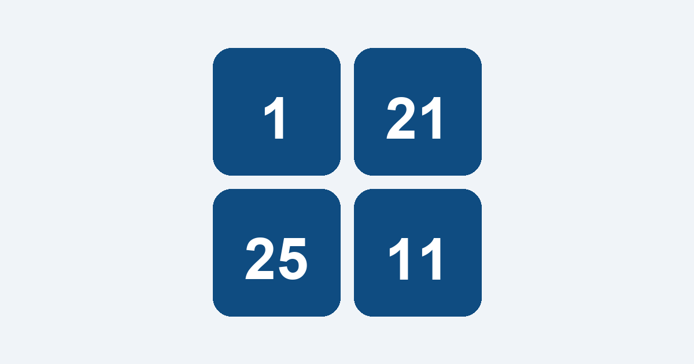

請點選：1
⏱️ 0.00 秒
📊
累積遊玩：
0
次
玩家總數：
0
人
📲 加入主畫面
將遊戲加入桌面，隨時隨地玩！
立即安裝
稍後再說
🍏 iPhone 加入桌面教學
1. 點擊瀏覽器下方的
「分享」
圖示
2. 往下滑動，點選
「加入主畫面」
3. 點擊右上角的
「新增」
我知道了
⚠️ 請在瀏覽器中開啟
為了確保遊戲順暢與記錄保存：
1. 請點擊右上角的
[⋮]
或
[≡]
2. 選擇
「以其他應用程式開啟」
或
「在預設瀏覽器中開啟」

關閉提示
🎉 挑戰完成！
本次成績：0.00 秒
再玩一次
📊 歷史戰績
保留近 90 天的最佳紀錄
關閉